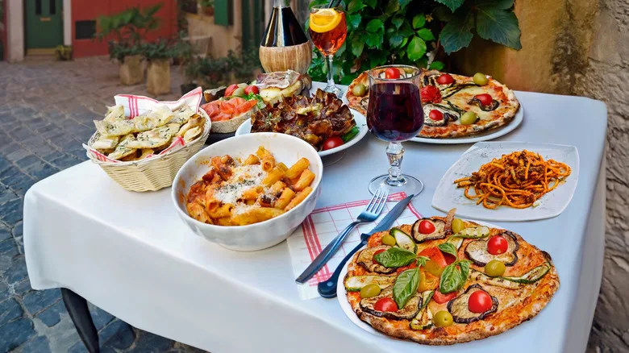

Italy’s food is like tasting the soul of the country—rich, regional, and crafted with a deep respect for tradition. Each meal feels like a small celebration. In the north, creamy risottos and fresh pasta dishes like tagliatelle al ragù warm the table, while in the south, bright flavors of tomatoes, basil, and olive oil come alive in every bite.